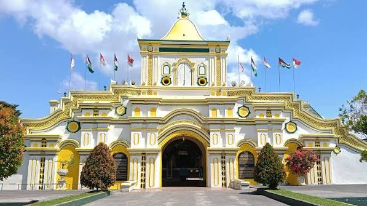

Sumenep is chilling right on the eastern tip of Madura Island. This town is super special because it's the only spot in East Java with an ancient royal palace built by past kings that's still standing and well-preserved today.
Known by the nicknames "Kota Keris" and "The Soul of Madura", Sumenep offers a rich blend of culture, history, and a tranquil atmosphere. Surrounded by sea on three sides, my birthplace is also blessed with beautiful coastlines and exotic islands.